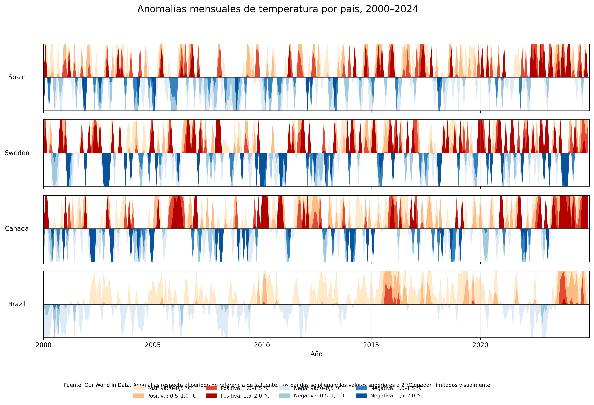

Esta página reúne tres visualizaciones: un Choropleth Map, un Waterfall Chart y un Horizon Graph.
Renta neta anual media por persona en las provincias de España.
Componentes del balance demográfico de España en 2024.
Evolución de las anomalías mensuales de temperatura en España, Suecia, Canadá y Brasil entre 2000 y 2024.

Instituto Nacional de Estadística (INE)
Our World in Data: anomalías mensuales de temperatura
Atlas de distribución de renta de los hogares. Serie 2015-2024